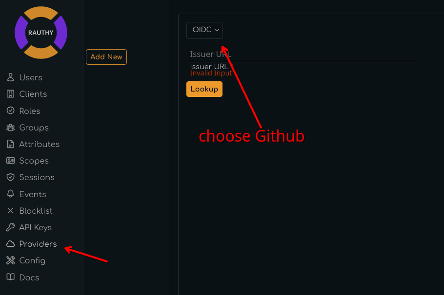
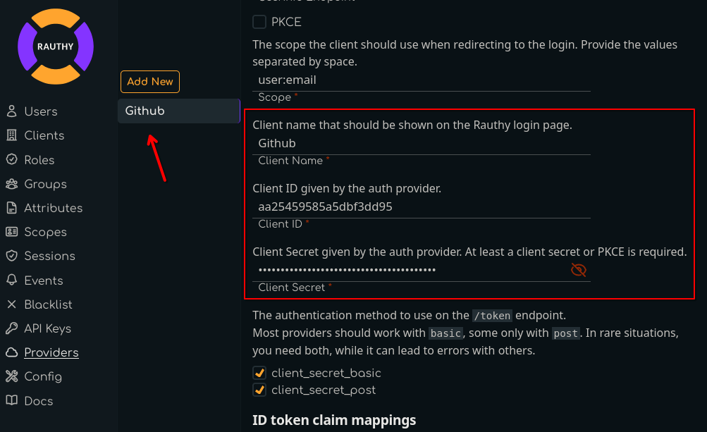
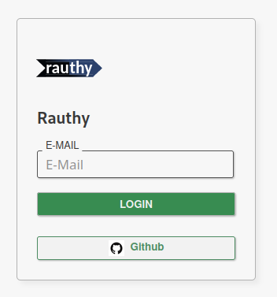

Github Provider
To set up Github as an upstream provider for Rauthy, you have pretty little things to do.
Rauthy includes a Template for Github already, which makes this whole process pretty simple.
Create an OAuth App
- Log in to your Github account
- Navigate to Settings -> Developer Settings -> OAuth Apps -> Register a new application
- Provide any name for your application. This is not important for the flow, only for your users to recognize
- Homepage URL should be the URL of your Rauthy deployment
Authorization callback URLis the only really important one here. For instance, if your Rauthy instance would live athttps://iam.example.com, your callback URL would behttps://iam.example.com/auth/v1/providers/callback- Don't enable Device Flow and
Register application

On the following page, you can upload a logo and so on, but the important information is:
Client IDGenerate a new client secret
Both of these values need to be inserted into Rauthy's Admin UI in the next step, so lets open this in a new tab.
Rauthy Provider Config
- Log in to your Rauthy Admin UI, navigate to
Providersand add a new provier. - Choose
Githubas theTypeand leave the Custom Root CA and insecure TLS unchecked.

- The template pre-populates most of the inputs already for you. The only information you need to add here is
Client ID-> copyClient IDfrom the Github OAuth App page inside hereClient Secret-> on Github,Generate a new client secretand copy & paste the value- you may edit the
Client Nameif you want something else thanGithub

- Leave the rest untouched and hit
Save - You should expand the saved Github provider in the Rauthy UI again after saving and upload a Logo for the Client.
Currently, Rauthy does not provide default Logos, though these might be added at some point. Just
UPLOAD LOGOfrom your local disk.
Finish
That's it. Now log out and try to log in to your Account view. You should see your new upstream provider on the Login page.
